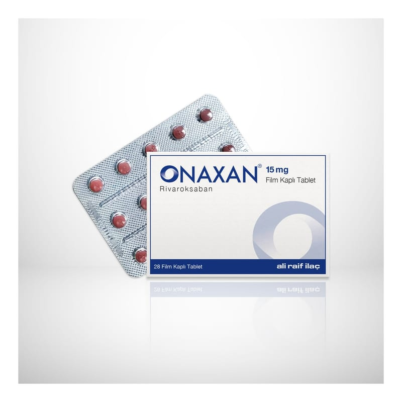

Onaxan 15 mg Film Kaplı Tablet, 28 Adet

Ne için kullanılır
KT · Bölüm 1• ONAXAN®film kaplı tabletlerin her biri 15 mg etkin madde (rivaroksaban) içerir. ONAXAN®laktoz monohidrat (inek sütü kaynaklı) içermektedir. Rivaroksaban pıhtılaşmayı önleyici ilaçlar olarak adlandırılan bir ilaç grubuna dahildir ve etkisini kanın pıhtılaşmasında rol oynayan faktör Xa’yı engelleyerek ve böylece kanın pıhtı oluşturma eğilimini azaltarak gösterir.
• ONAXAN®28 tabletlik ambalajlarda sunulmaktadır. Ambalajın içindeki tabletler kırmızı renkli, bir yüzü üçgen ve 15 baskılı, yuvarlak bikonveks film kaplı tabletlerdir. • ONAXAN®aşağıdaki amaçlarla kullanılır: ONAXAN®yetişkin hastalarda aşağıdaki durumlarda kullanılır: - Bir tür kalp ritim bozukluğunda (non-valvülar atriyal fibrilasyon), beyin (inme) veya vücudun diğer damarlarındaki kan pıhtısının önlenmesinde, - Bacak damarlarındaki kan pıhtısının (derin ven trombozu) tedavisi ve akciğer damarlarında kan pıhtısının (pulmoner emboli) tedavisi, ve bacak damarlarında ve akciğer damarlarında kan pıhtısının tekrar oluşmasının önlenmesinde. • ONAXAN®çocuklarda ve 18 yaş altındaki ergenlerde ve vücut ağırlığı 30 kg’dan fazla olan kişilerde aşağıdaki amaçlarla kullanılır: - Kan pıhtılarını tedavi etmek ve kan pıhtılarını tedavi etmek için kullanılan enjektabl ilaçlarla ilk tedavinin ardından, venlerde veya akciğerin kan damarlarında kan pıhtılarının yeniden oluşmasını önlemek için.